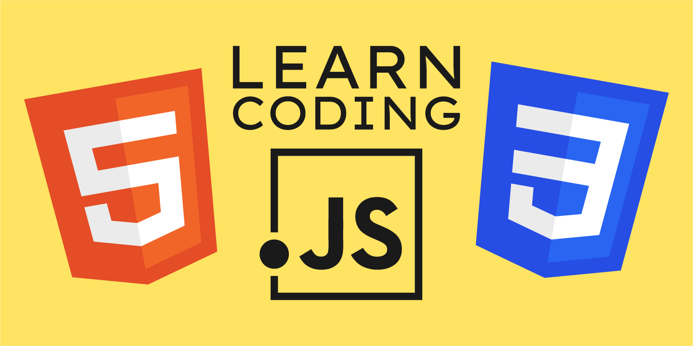
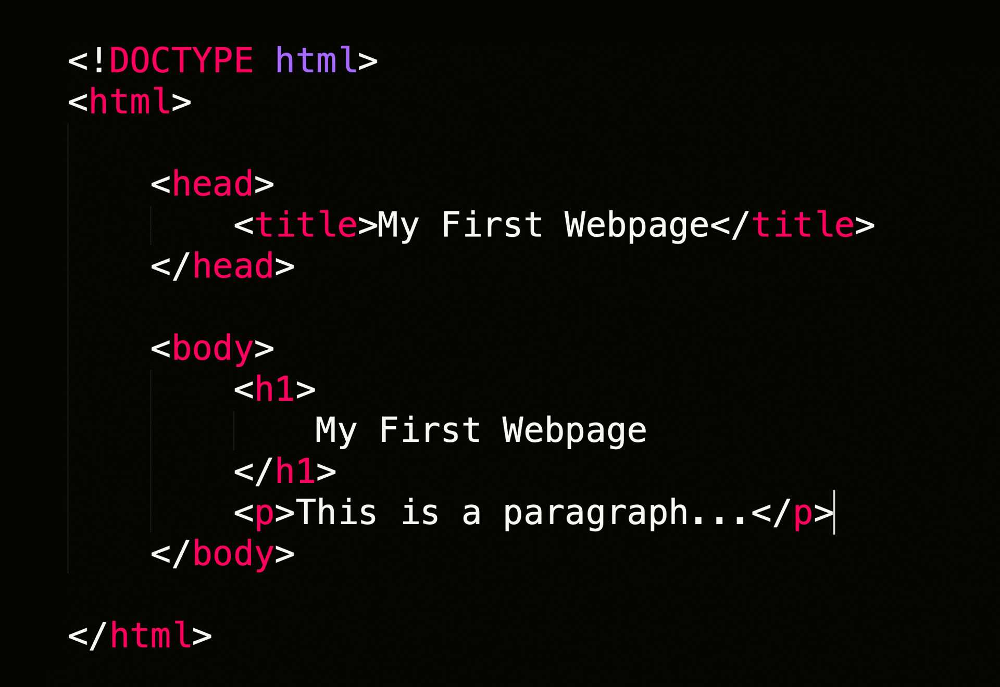
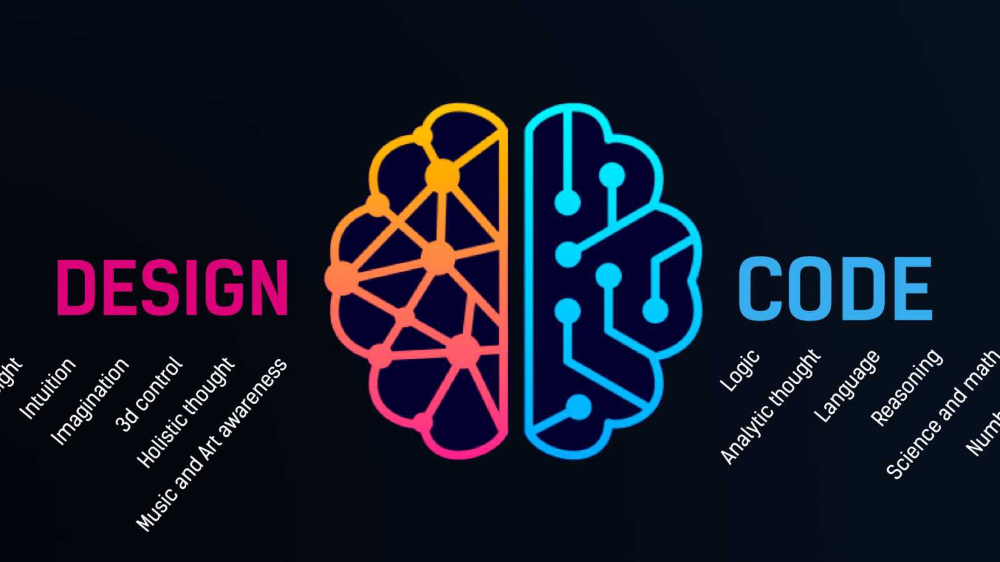

Wellcom To My Code-Nation Website

This Websit is About Coding with Code Nation.

We believe that anyone can code. Our courses in coding and augmented reality are designed to support learners to gain the digital skills employers are looking for.
All our courses are created with our extensive employer network and include employability sessions to support you to land that job as a Software Engineer / Developer, Tester or XR Programmer..
We run courses with various pathways to employment. Be Inspired, Explore digital skills, Develop your skills, Master your skills and Excel as an Apprentice!.
Our mission is to help you learn to code for free through various funding routes or scholarships. We also have bursaries and student loan facilities to make our coding bootcamps as accessible as possible.
From Fortnite to Spotify, Just Eat to Instagram - these amazing platforms started with a single line of code.
Coding is the foundation of the websites, applications and games we use every day, combining problem solving with creativity to build the next generation of technology used by people all over the world. If you've got a great attitude and a desire to learn, you've got what it takes to become a professional coder.

Wherever you are on your journey, we have the course and pathway for you. We make our training accessible so if you have no experience or you’ve done some online courses, we will support you.
Our courses are entirely immersive and project led – whether it’s in a physical campus or the virtual learning environment – you’ll learn tech skills, acquire commercial attributes and be exposed to industry practice from day one..
{ If you can read Next Text line, Your eye sight is 100% , Your ready for coding}
Inspiring
Inspire more people, from all areas and backgrounds, to take that first step into Digital.
Personalised.
Your learning, Your way - Learn from home, our campus, our partner organisation or an employer...or a hybrid of them all. You will have an individual learning plan, and we will support you to achieve your pathway to a positive outcome, whether that’s employment or further education or learning.